Almost everything you will learn in this course about where things are in a cell was first seen in a microscope. Today is about how those pictures are made, and how far you can trust them.
After this lecture you can:
explain the difference between magnification and resolution, and why a light microscope cannot separate two objects closer than about 200 nm;
explain how phase contrast, DIC and fluorescence make transparent cells visible;
describe how we label one kind of protein: immunofluorescence (fixed cells) and fluorescent proteins such as GFP (living cells);
say what confocal, light-sheet, super-resolution and electron microscopy (TEM, SEM, cryo-EM, tomography) add;
choose a method for a question, and read a microscopy figure critically.
ELO 1 (cell and methods) and ELO 6 (methods to study the cytoskeleton).
The question: how do you see one protein in a living cell?
A human cell is about 20 µm across and almost transparent. A protein is about 5 nm: 4000 times smaller. The cell contains about 10 000 different proteins. Three problems:
Resolution: can we separate two things that are close together?
Contrast: can we see a cell that is mostly water?
Specificity: can we see one kind of molecule and not the others?
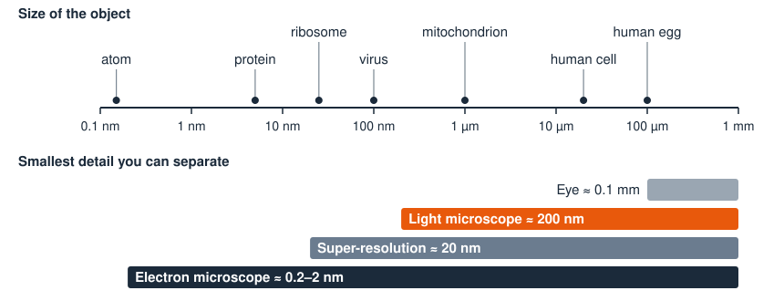
Magnification is not resolution
Magnification makes the image bigger. Resolution is the smallest distance at which two points still look like two.
Light spreads when it passes through a lens. A point of light becomes a small blur spot. When two spots overlap too much, they merge into one.
The limit (Abbe, Rayleigh): \;d \approx \dfrac{0.61\,\lambda}{\mathrm{NA}}. Green light (\lambda \approx 500 nm) and the best oil objective (\mathrm{NA} \approx 1.4) give d \approx200 nm side to side, and about 500 nm along the optical axis (depth).
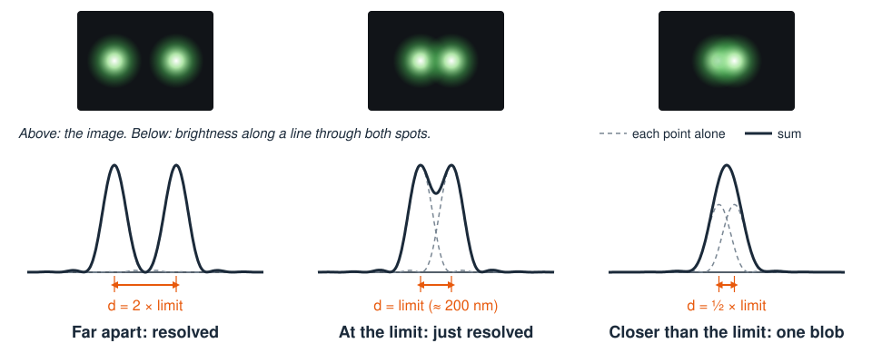
Enlarging a blurred image more (“empty magnification”) adds no detail. Try it:the resolution demo.
Contrast: making transparent cells visible
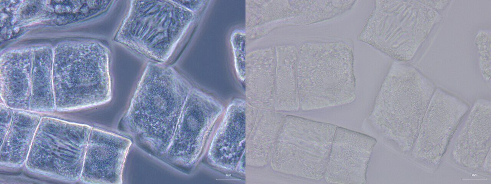
The same onion root-tip cells. Left: phase contrast. Right: bright field. Scale bar 10 µm.
Bright field: light passes straight through. Unstained cells are almost invisible. Tissues are stained (dyes), which needs dead, fixed cells.
Phase contrast: light slowed by dense parts (nucleus, membranes) is turned into darker or brighter areas. Living cells, no stain.
DIC: shows edges and slopes as light and shadow, so cells look 3D.
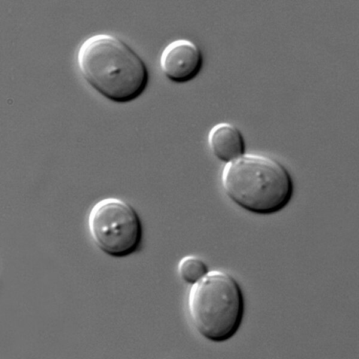
Yeast cells, DIC.
Fluorescence: absorb one colour, emit another
A fluorophore absorbs light of one wavelength, loses a little energy as heat, and within nanoseconds emits light of a longer wavelength (lower energy).
You know absorption spectra from spectrophotometry. A fluorophore has two spectra: excitation and emission. The gap between the peaks is the Stokes shift.
The shift lets us filter away the excitation light and keep only the glow: a bright signal on a black background, so even a few molecules can be seen.
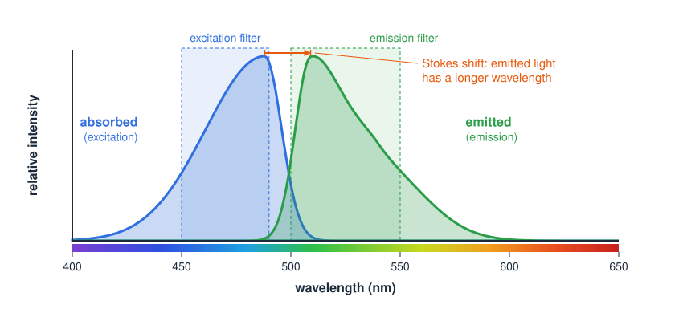
Inside a fluorescence microscope: the filter cube
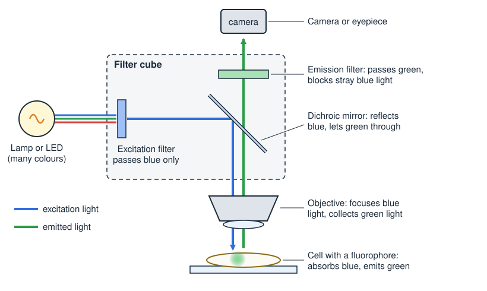
Excitation filter picks the colour that excites the fluorophore.
Dichroic mirror reflects that colour down onto the sample, but lets the longer emitted wavelength pass.
The objective both lights the sample and collects its glow.
Emission filter removes the last stray excitation light.
One cube per fluorophore. To image blue, green and red labels, the microscope takes one picture per cube (channel) and combines them.
Labelling a protein in fixed cells: immunofluorescence
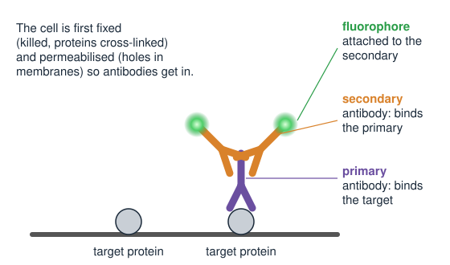
A primary antibody binds the target protein. A secondary antibody carrying a fluorophore binds the primary. Several secondaries per primary make the signal brighter.
Any protein you have a good antibody against can be shown, but only in dead cells.
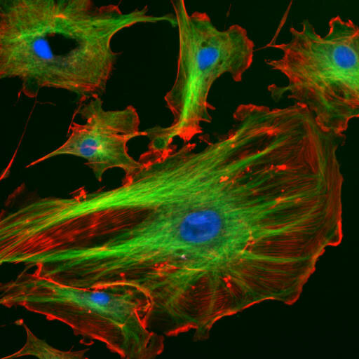
Endothelial cells. Blue: DNA (DAPI). Green: microtubules (antibody against tubulin). Red: actin filaments (phalloidin).
Fluorescent proteins: a gift from a jellyfish
Aequorea victoria, the crystal jelly.
The jellyfish makes green fluorescent protein (GFP): 238 amino acids that fold into a barrel and build their own light-emitting group inside. No other molecule is needed.
The GFP gene works in any cell: bacteria, worms, mice, human cells (1994).
Mutations changed its colour: blue, cyan, yellow. Red proteins (e.g. mCherry) came from corals.
Nobel Prize in Chemistry 2008 (Shimomura, Chalfie, Tsien).
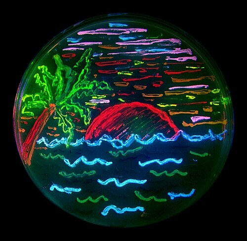
A beach scene painted with bacteria that make eight different fluorescent proteins.
GFP fusion proteins: watching a protein in a living cell
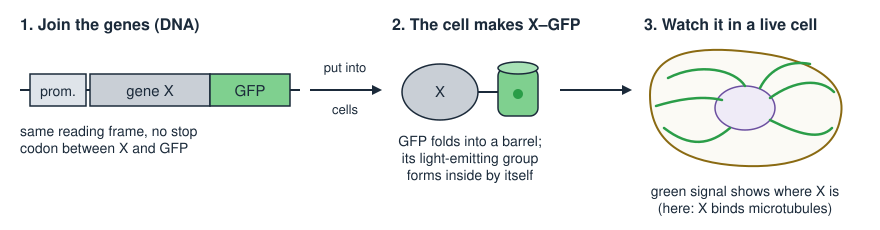
Join the gene for your protein to the GFP gene, in frame, and put it into cells.
The cell makes one chain, protein X–GFP, which usually goes where X normally goes.
Living cells, no antibody. Check that the tag does not disturb X: does X–GFP still work, and is it in the same place as the untagged protein?
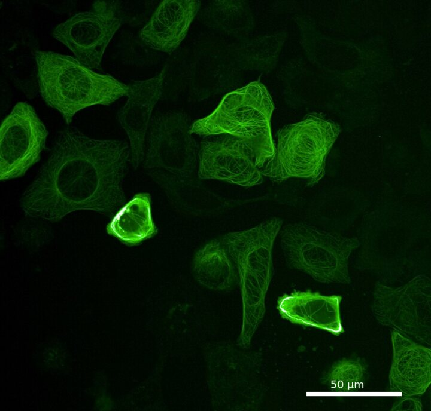
HeLa cells with a GFP-tagged microtubule-binding protein: the microtubule network.
Confocal microscopy: a sharp optical section
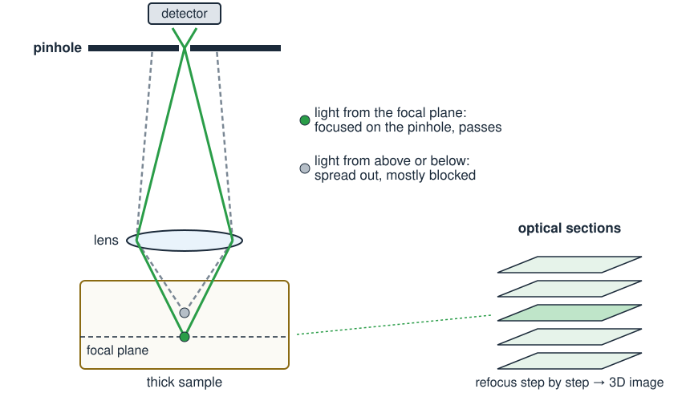
In a normal (wide-field) fluorescence microscope, light from above and below the focus adds a haze.
A confocal microscope puts a pinhole where the in-focus light comes to a point. Light from other depths is spread out and blocked.
A laser spot scans the sample point by point to build the image.
Result: a thin optical section (about 0.5–1 µm). Refocus step by step to get a 3D stack, without cutting the sample.
Live-cell imaging and light-sheet microscopy
Filming living cells needs:
37 °C, CO₂ and medium on the microscope stage;
little light: strong light bleaches fluorophores (photobleaching) and makes reactive oxygen species that damage cells (phototoxicity);
a fast, sensitive camera.
Light-sheet microscopy lights only a thin plane from the side, and the camera looks from above. It is gentle and fast, so whole embryos and organoids can be filmed in 3D for hours or days.
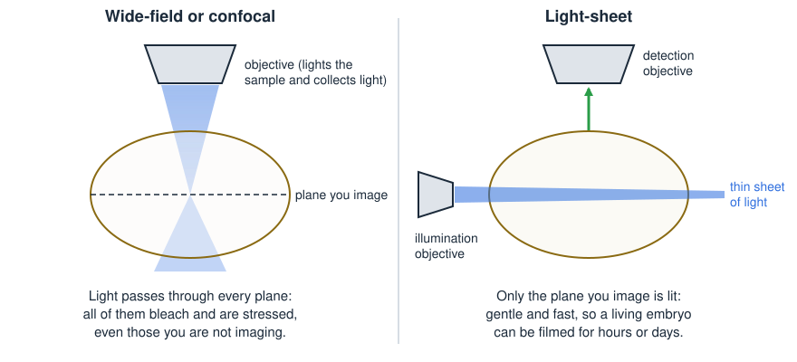
Super-resolution: beating the 200 nm limit
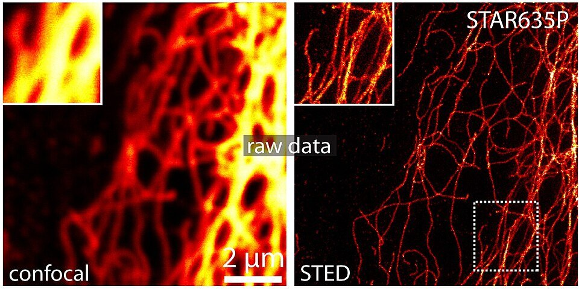
Intermediate filaments (vimentin), same area. Left: confocal. Right: STED. Insets: enlarged view of the dotted box. Scale bar 2 µm.
The limit is about separating neighbouring glowing molecules at the same time. Super-resolution methods get around it:
STED: a second, doughnut-shaped laser switches off fluorescence everywhere except a tiny centre.
PALM/STORM: only a few molecules glow at a time; the centre of each blur spot is found precisely, then thousands of frames are combined.
SIM: patterned light, about 2× better, gentle enough for live cells.
Expansion microscopy: swell the sample in a gel, then image it.
About 20–100 nm. Nobel Prize in Chemistry 2014.
Transmission electron microscopy (TEM)
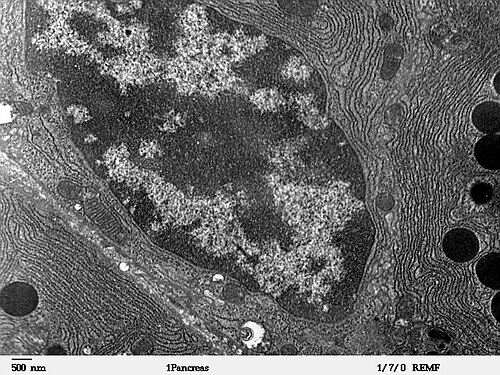
TEM of a pancreatic acinar cell: large nucleus, parallel stacks of rough ER, mitochondria and round, dark secretory (zymogen) granules. Scale bar 500 nm.
Uses electrons instead of light. Their wavelength is about 100 000× shorter, so resolution reaches about 1–2 nm in cells.
Electrons pass through a very thin slice (about 50–100 nm). Dense, heavy-metal-stained parts scatter electrons and look dark.
Price: the sample must be in a vacuum: cells are fixed, stained with heavy metals (osmium, uranium, lead), embedded in plastic and cut. No living cells.
Specific proteins: antibodies with gold particles (immunogold).
Scanning electron microscopy (SEM): the surface
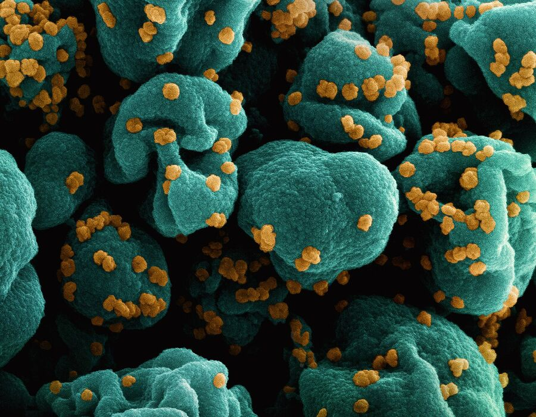
SEM, colour added: cultured cells (teal) covered with SARS-CoV-2 particles (orange), virus isolated from a patient. Each particle is about 100 nm across.
The sample is coated with a thin layer of metal. A fine electron beam scans across it.
Electrons knocked out of the surface are counted point by point.
The image shows shape and surface in 3D, with a large depth of focus. Resolution about a few nm.
It does not show the inside of the cell.
Colours in EM images are added afterwards by people. Electrons have no colour.
Cryo-EM and electron tomography
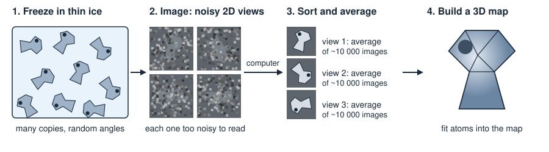
Cryo-EM: freeze the sample so fast (about −180 °C) that water becomes glass-like ice, not crystals. No stain, no drying: molecules keep their native shape.
Single-particle analysis: average tens of thousands to millions of noisy images of one purified protein → a 3D density map, often better than 0.3 nm (atoms). Nobel Prize in Chemistry 2017.
Cryo-electron tomography: tilt a thin slice of a frozen cell and combine the views into a 3D image of the inside of the cell.
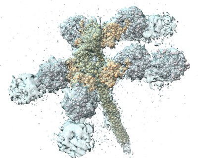
Cryo-EM density map (pale blue surface) of a bacterial protein complex at 0.43 nm, with the atomic model (spheres) fitted inside.
How do we know? Reading a microscopy figure
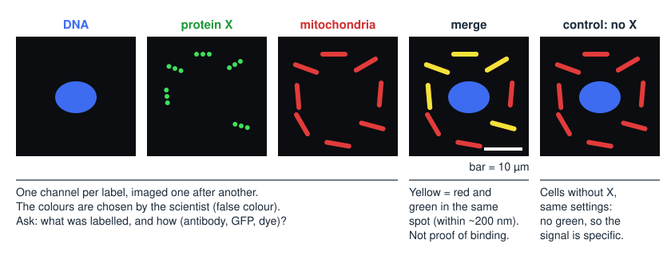
Before you believe a microscopy figure, check:
Scale bar: how big is this? Compare with the resolution limit of the method.
What is labelled, and how? Antibody (fixed cells) or fusion protein (living cells)? One cell or many? Is the cell typical?
Controls: no primary antibody, cells without the protein (knockout or knockdown), same camera settings. A merge is not proof that two proteins bind.
Choosing a method
Method
Best resolution
Living cells?
What it shows best
Bright field, phase, DIC
~200 nm
yes
cell shape, division, movement; no labels
Wide-field fluorescence
~200 nm
yes (GFP) / no (antibodies)
where a labelled protein is; fast
Confocal
~200 nm, 0.5–1 µm deep
yes
sharp sections, 3D stacks of cells and tissue
Light-sheet
~300 nm
yes, for days
whole embryos and organoids over time, gently
Super-resolution
~20–100 nm
mostly fixed
arrangement of proteins inside small structures
TEM
~1–2 nm
no
membranes and organelles inside the cell
SEM
a few nm
no
the cell surface in 3D
Cryo-EM (single particle)
< 0.3 nm
no (purified protein)
atomic structure of a protein or complex
Cryo-electron tomography
~2–4 nm
no (frozen cell)
molecules in place inside the cell
Start from the question: what size, alive or not, which molecule?
Why it matters: a microscope helped design COVID-19 vaccines
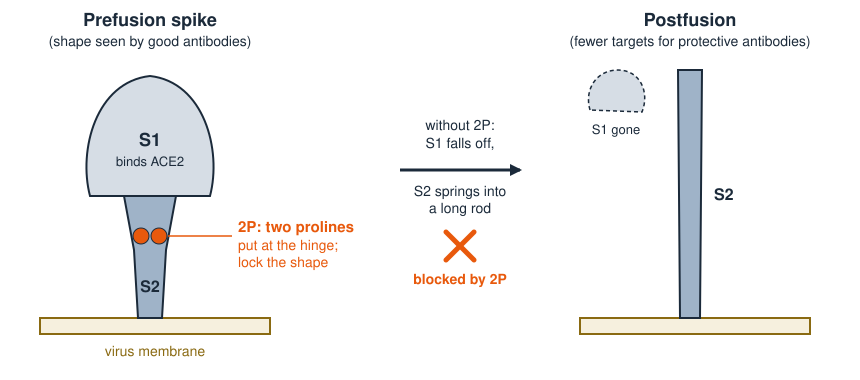
The spike’s prefusion shape is the best target for protective antibodies, but it can spring into a postfusion rod.
Two prolines (2P) at a hinge in S2 lock it. The trick came from earlier cryo-EM work on related coronaviruses (MERS, SARS).
February 2020: a cryo-EM structure confirmed that the SARS-CoV-2 2P spike keeps the prefusion shape. The mRNA vaccines (Pfizer-BioNTech, Moderna) encode this 2P spike.
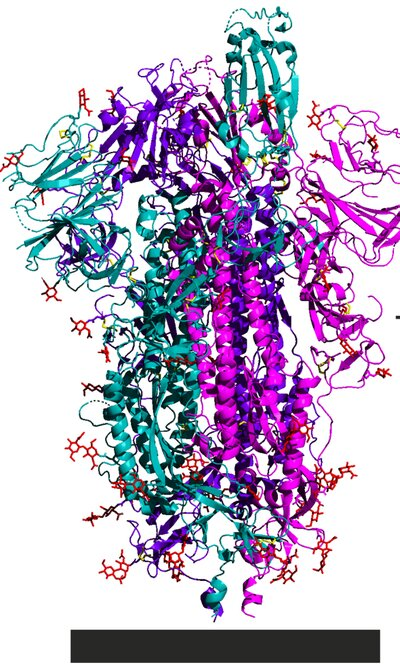
Cryo-EM structure of the SARS-CoV-2 2P spike (PDB 6VSB). Three chains in three colours, sugars red; grey block: virus membrane.
Summary
Resolution, not magnification, sets what you can see. Light microscopes stop at about 200 nm; super-resolution reaches about 20 nm; electron microscopes reach nanometres, and cryo-EM reaches atoms in purified proteins.
Contrast comes from optics (phase contrast, DIC), from stains, or from fluorescence, where filters separate the emitted colour from the exciting colour.
Specificity comes from labels: antibodies in fixed cells, fluorescent proteins (GFP fusions) in living cells. Confocal and light-sheet microscopes give sharp optical sections and gentle live imaging.
Choose a method from the question: size, living or fixed, which molecule. Every method has a price.
Read figures critically: scale bar, channels, merge, controls.
Read more (optional): Alberts et al., Molecular Biology of the Cell, 7th ed., ch. 9.